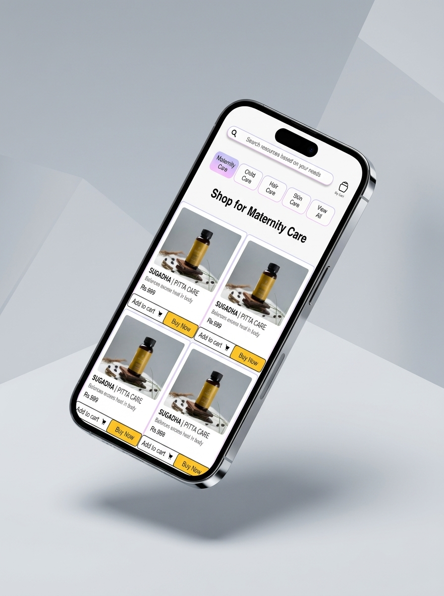
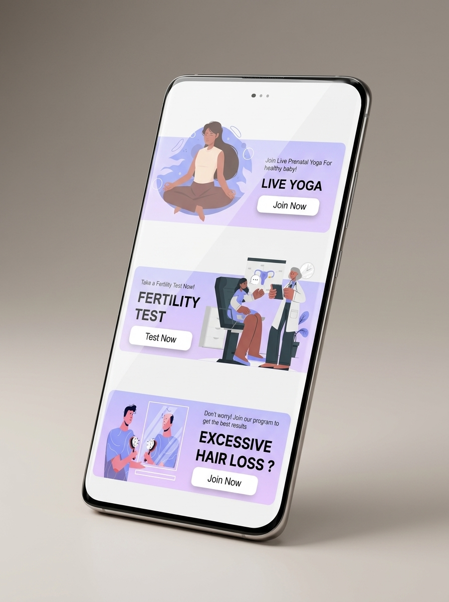
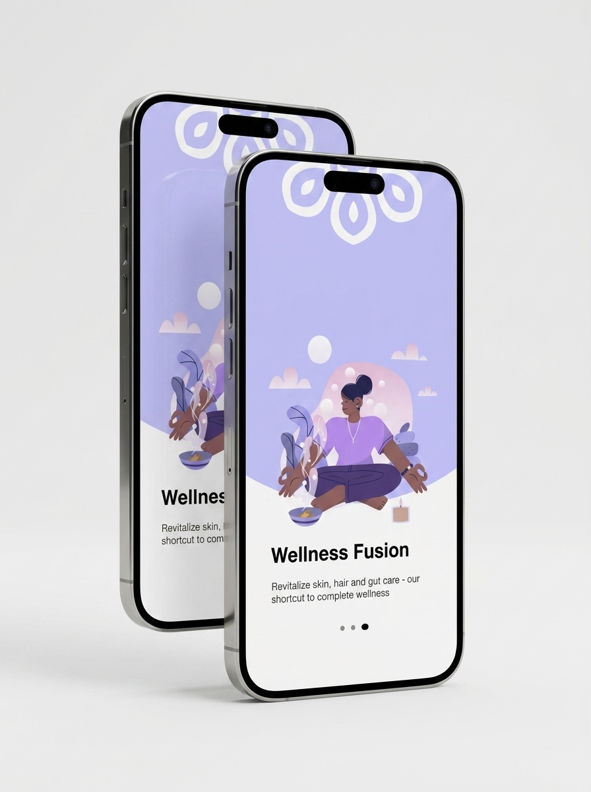

Tanvish
Wellness App
Wellness mobile app for meditation videos, live meditation, daily quotes, and store experiences — bringing multiple wellness touchpoints into one coherent product.
The app needed to bring multiple wellness experiences into one simple mobile product — recorded meditation videos, live sessions, daily quotes, and a store — without making the product feel scattered or disconnected.
The challenge was to unify different experience types (passive content, live interaction, transactional) under one navigation structure while keeping each experience feel purposeful and easy to access on its own terms.
I worked as a Business Analyst and Project Manager across the full product cycle. I participated in client meetings, understood user needs and business requirements, then created the wireframes and designed the mobile app screens end-to-end.
- Requirement gathering from client discussions
- Product flow planning across all sections
- Wireframes for key screens
- UI design for the mobile app
- Feature planning and prioritization
- Store section structure
- Meditation and live-session flow structure
I started by mapping the four distinct product experiences the client wanted: video content, live sessions, daily quotes, and a store. The key design question was how to give each section a clear identity without making the overall app feel like four separate products glued together.
From there I structured the navigation, defined feature priorities for each section, created the wireframes, and moved into UI design — keeping a calm, focused visual language throughout that matched the wellness context.
- Multi-section product architecture
- BA and PM work on a client mobile app
- Bridging requirements into wireframes and UI
- Navigation design for diverse content types
- End-to-end ownership from brief to screens
- Wellness / consumer app domain experience

App · Isometric View
App · Perspective View
App · Dual Screen ViewTanvish Wellness App · Meditation, live sessions, quotes, store · BA + PM · Wireframes · UI Design